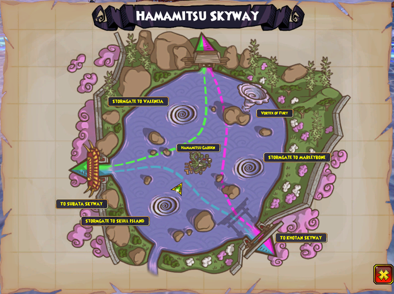

Non-dock Areas
From Hamamitsu docks, you can easily reach three stormgates all in this area. They go to Marleybone, Skull Island, and Valencia. The Vortex of Fury is also here.
From Hamamitsu docks, you can easily reach three stormgates all in this area. They go to Marleybone, Skull Island, and Valencia. The Vortex of Fury is also here.